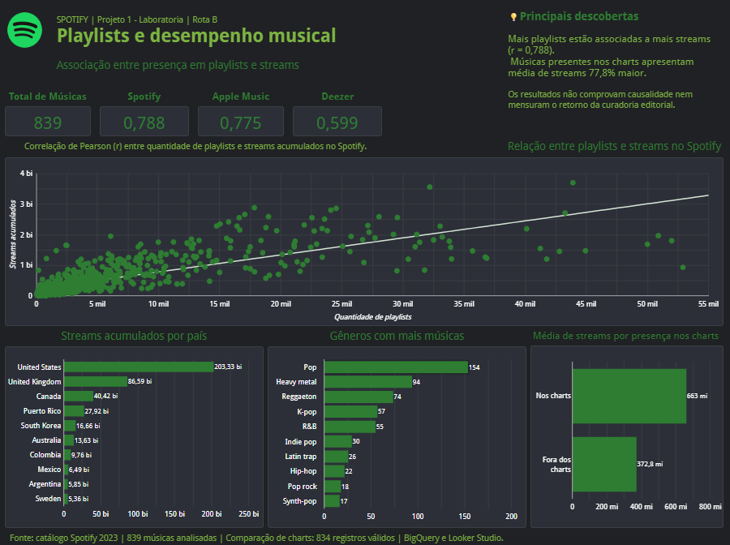

Playlists e desempenho musical
Uma análise sobre a relação entre presença em playlists, rankings musicais e streams no Spotify.
Projeto de análise de dados | Laboratoria
Músicas analisadas
Correlação playlists × streams
Média de streams nos charts
O desafio
Investigar se músicas presentes em mais playlists apresentam maior volume de reproduções e como essa associação se manifesta nos rankings musicais.
Principais descobertas
Foi identificada uma associação positiva forte entre a quantidade de playlists do Spotify e os streams acumulados (r = 0,7882).
Músicas presentes nos charts apresentaram média de streams 77,8% maior do que músicas ausentes. Esses resultados não comprovam causalidade.
Dashboard executivo
Explore os resultados da análise de playlists, rankings musicais e streams no Spotify.
